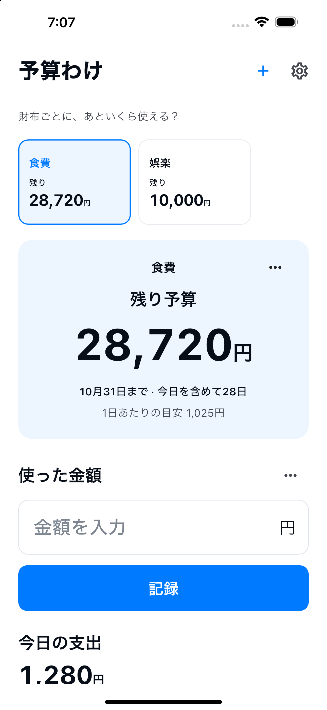

好きな名前で財布を作り、予算を決めます。
財布ごとに、あといくら使える？
食費も、娯楽も。
分けて、残りが分かる。
食費、娯楽、日用品。自分で作った財布に予算を分けて、あといくら使えるかをすぐ確認。
使い方を見るiPhone / Android向け · ストア公開準備中

使い方
分ける。記録する。残りが分かる。
財布を選んで、使った金額を記録します。
履歴から記録を直したり、返金を追加できます。
次の予算は自分で開始。過去の記録は残ります。
必要なものだけ
財布は自由に。
管理はシンプルに。
- 財布の名前
- 食費、娯楽、日用品など、自分の好きな名前と予算を決めます。期間の初期値は今月です。
- 残り予算
- 残額は「設定した予算 − 記録した支出 ＋ 返金」です。銀行や実際の財布の残高とは異なり、入力した記録に基づく目安です。別の財布の残額で超過を埋め合わせません。
- 10の言語・10の通貨
- 日本語 / English / 한국어 / 简体中文 / 繁體中文 / Español / Français / Deutsch / Italiano / Português (Brasil)
JPY / USD / EUR / KRW / CNY / TWD / BRL / GBP / CAD / AUD
端末内の記録
アカウントは不要。
財布の名前・予算・通貨・期間と、支出・返金の金額・日付・メモは、このアプリ専用の端末内データベースに保存します。記録は財布ごとの予算と履歴を表示するために使います。
アカウント登録は不要です。記録を開発者のサーバーへ送信する機能、広告、アクセス解析、追跡はありません。OSのバックアップや機種移行の対象になる場合がありますが、復元を保証するものではありません。 履歴から支出や返金の記録を削除できます。財布をしまう操作では記録を保持します。アプリを削除すると端末内の記録も削除されることがあります。OSのバックアップは端末やアカウントの設定で管理してください。
プライバシーポリシー →